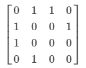
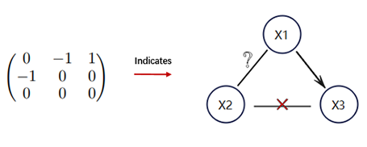
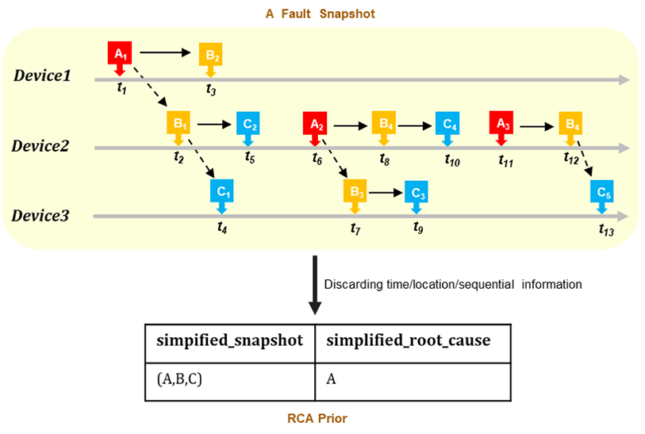

Dataset
This competition includes two types of datasets: artificial datasets and real-world datasets, in which the real-world datasets are collected from a telecommunication network, while the artificial datasets are generated by our internal data simulators which are designed using domain expertise. We plan to divide the competition into two phases and provide a total of six datasets over the entire competition, in which four of the datasets will be released in the first phase and the final two are appended in the second (final) phase. The assignment of the datasets are shown in Table 1
Table 1: Dataset assignment over competition phases.
| Phase No. | Dataset |
|---|---|
| Phase 1 | 3 simulation datasets + 1 real datasets |
| Phase 2 | 1 simulation datasets + 1 real datasets |
Dataset information given to the competition participants If you download the datasets from our competition site, you’ll find that K datasets are stored in separated directories named from 1 to K, and each dataset fully or partially includes the following data files:
alarm.csv: Historical alarm data
-
Format: [alarm_id, device_id, start_timestamp, end_timestamp]
-
Description: In the alarm data file we provide historic alarm information. Each row denotes an alarm record which contains the alarm ID (i.e., the alarm type), the device where the alarm occurred, the start timestamp, and the end timestamp. For privacy, every alarm id is encoded to an integer number starting from 0 to N-1, where N is the number of the alarm types. Each device ID is likewise encoded to an integer number starting from 0 to M-1, where M is the number of the devices.
-
Example:
alarm_id device_id start_timestamp end_timestamp 2 28 30684 32416 10 28 30684 30867 13 32 30795 32668 0 35 32215 32867
topology.npy (Optional): The connections between devices .
-
Format: an M ×M NumPy array, with M being the number of the devices in the network.
-
Description: This NumPy file stores the binary symmetric adjacency matrix for the network topology which is an undirected graph. For example, the element which is in the i-th row and j-th column of the matrix equals 1 (0) means the existence (resp. non-existence) of an undirected link between the device i and the device j.
-
Example : M=4

causal_prior.npy (Optional): Prior knowledge indicating definite causal relation information.
-
Format: An N × N NumPy array, where N is the number of the alarm types.
-
Description: Similar to the topology, causal_prior.npy stores an adjacency matrix for partially representing the true causal alarm graph. The prior information is labeled manually by experts or, for the synthetic datasets, the pre-set causal assumptions. The element in the i-th row and j-th column of the matrix equals 1 (0/-1), which means the existence (resp. non-existence or Uncertain) of a directed edge from the alarm type i to alarm type j.
-
Example: N = 3, see Figure 2

Figure 2
rca_prior.npy (Optional): Prior knowledge including some simplified fault snapshots and the corresponding RCA results.
-
Format: [simpified_snapshot, simplified_root_cause]
-
Description: In the real-world RCA scenario, a fault snapshot contains detailed information on the network state (a series of alarms with occurrence time and occurrence location information) within the period a fault occurs, while simplified fault snapshots extract or compress the corresponding network state to an alarm type list ignoring the occurrence time/location and sequential information, and the corresponding RCA result is as well. Due to considering knowledge reusability, the simplified snapshots along with simplified RCA results (also can be regarded as RCA rules) are a common way to store considerable raw RCA cases in the AIOps field.
-
Example: see Figure 3
 ##### Figure 3
It’s essential to note that each dataset is causally independent of others, hence it’s not suitable to do any information exchange among these datasets when executing causal discovery tasks.